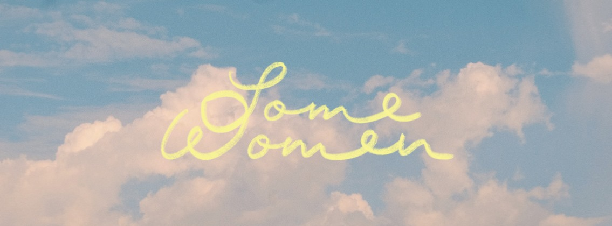

About
Team
Press
Resources & Impact
Contact
Watch the Film
Private Screenings are possible (in Singapore)
Get a private screening @ The Projector
Get a private screening @ Golden Village
Past Screenings
18th Vancouver International Women in Film Festival
2023-03-10
Winner of the
Impact Award – Feature Film
26th Toronto Reel Asian International Film Festival
(North American Premiere)
2022-11-12
Second BaliMakãrya Film Festival
(Indonesian Premiere)
2022-10-19 — with post-screening Q&A with Producer
13th Golden Village Love & Pride Film Festival
2022-10-09
2022-10-16
Sheffield Film Festival
(International Premiere)
2022-06-25 — with post-screening Q&A
2022-06-26 — with post-screening Q&A
2022-06-28
2022-03-24 – 04-27
Golden Village
: Gemini Funan, GV Funan, GV VivoCity
2022-03-24 – 05-01
The Projector: Golden Mile, Riverside Point
2022-03-19
(SOLD OUT)
The Projector, Singapore — with post-screening Q&A
AWARE's
Break Free!
International Women's Day Celebration
2022-03-12
(SOLD OUT)
The Projector, Singapore
2022-03-08
(SOLD OUT)
The Projector, Singapore — with post-screening Q&A
Opening film of the
Women Make Film Festival 2022
2021-12-05
(SOLD OUT)
Singapore International Film Festival
Audience Choice Award
Encore Screening
2021-12-04
(SOLD OUT)
32nd Singapore International Film Festival
(World Premiere) — with post-screening Q&A (
Internet Archive
)
Some Women
Some women take a different path to womanhood